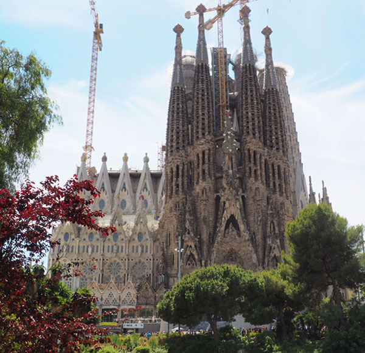
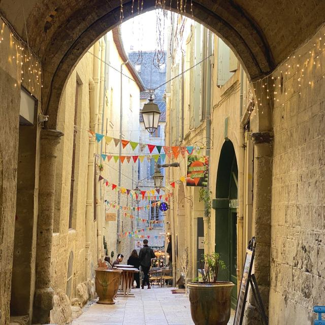
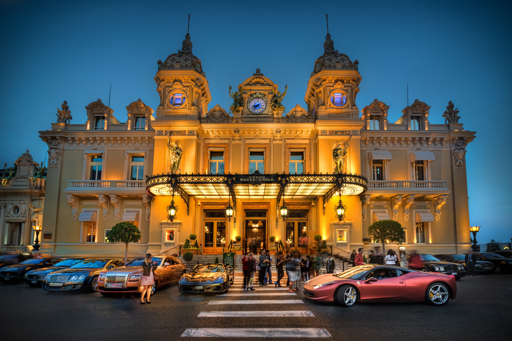
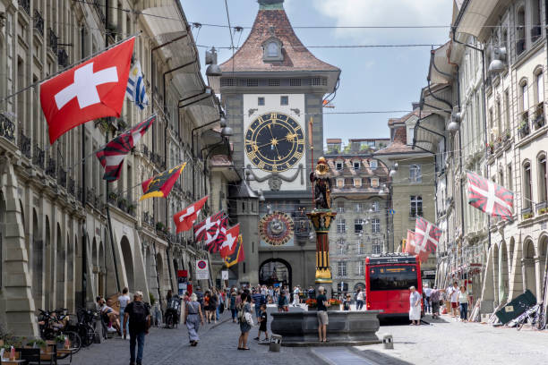

Madrid a Suiza, ida y vuelta.
Primera parada: Barcelona (de paso)
Desde Madrid salimos temprano, más o menos a las 6:15 de la mañana hacía Barcelona. Además de pasar por las plazas y centro de la ciudad, visitamos uno de los lugares más visitados; Sagrada Familia.
Sagrada Familia
Segunda parada: Montpellier, Francia (un día)
Después de haber estado, por el camino llegamos a Montpellier. Recorrimos toda la costa y dimos un paseo por el Écusson. Un barrio construido en la edad media.
Écusson
Tercera parada: Mónaco (un día)
Al costado nos quedaba Mónaco, por lo que aprovechamos y pasamos por este lugar tan conocido. Por ahí mismo probamos un hotel de los tanto que tiene esta ciudad. Por último visitamos el Casino de Montecarlo, el más famoso de aquí.
Casino de Montecarlo
Destino: Suiza (2 días)
Por último llegamos a nuestro destino, Suiza. En esta nos quedamos la mayor parte del tiempo restante. Pudimos visitar los alpes suizos, probar los chocolates y quesos más emblemáticos del páis, viajar en el Bernina Expréss y por último, ver la Torre del Reloj en Berna (Capital de Suiza).
Zytgloggeturm (Torre del reloj)